Кому и зачемWho it is for
Девелоперу: брать участок или нетDevelopers: buy the site or not
Решение о земле стоит миллиарды, а оценка занимает недели. Система за один прогон показывает, что и сколько можно построить, как это выглядит и сколько это стоит — до покупки участка.
A land decision is worth billions, yet a feasibility study takes weeks. In one run the system shows what can be built, how it looks and what it costs — before you buy the land.
Банку: пакет проектного финансированияLenders: project-finance pack
Стресс-тест по девяти сценариям, ковенанты, сводка затрат, поток денег по годам и очередям — в формате, привычном кредитному комитету.
Nine-scenario stress test, covenants, cost summary and cash flow by year and phase — in the format a credit committee expects.
Проектировщику: черновик, который не стыдно правитьArchitects: a draft worth refining
Три именованных замысла, нормоконтроль до показа человеку, планировки с приёмкой по 19 правилам. Архитектор тратит время на замысел, а не на рутину.
Three named design concepts, code checks before anyone sees a drawing, apartment plans checked against 19 acceptance rules. The architect spends time on ideas, not routine.
Генерация: от участка до квартирGeneration: from site to apartments
Первая точка контура — «Архитектор в машине»: мультиагентная система, которая за один прогон превращает границу участка в мастер-план, объёмы, фасады, квартиры и пакет для банка.
The first point of the loop is “Architect in the Machine”: a multi-agent system that turns a site boundary into a masterplan, massing, façades, apartments and a bank pack in a single run.
Метод: три слоя, одна база знаний, ноль облаковMethod: three layers, one knowledge base, zero cloud
1. Геометрическое ядро — детерминированное1. Deterministic geometry core
- окружение в 3 км: сопряжения, притяжения, вода, гравитационная модель потоков3 km context: access points, attractors, water, gravity model of trips
- фигура территории → районы → улицы с профилями → кварталы → поле высот → массингsite figure → districts → streets with cross-sections → blocks → height field → massing
- каркас «ядро + пилоны», квартиры по осям, инсоляция, пожарные разрывы“core + piers” structural grid, apartments on structural axes, daylight, fire separations
Без языковых моделей: один вход — один результат. Каждый шаг воспроизводим.
No language models here: same input, same output. Every step is reproducible.
2. Нормы как код2. Building codes as code
- СП 42, 54, 59, 4, 1, 113, 396; СанПиН; ГОСТ Р 57795; ПЗЗ; РНГП — исполняемые правилаRussian codes (SP 42, 54, 59, 4, 1, 113, 396; SanPiN; GOST R 57795; zoning) as executable rules
- норма убивает вариант, правило ставит диагноз: где и в какую сторону лечитсяa code rejects an option; a rule diagnoses where and how to fix it
- проверщик по стадиям: «норма / внимание / брак» с причинойstage checker: “pass / warning / fail” with a reason
Нормоконтроль происходит до того, как вариант увидит человек.
Compliance is checked before a human ever sees the option.
3. Агенты предлагают, но не рисуют3. Agents propose, they don’t draw
- 12 ролей: фигура, замысел, зонирование, фасад, планировки, жюри, экономика, банк…12 roles: figure, concept, zoning, façade, layouts, juries, economics, bank…
- координат не выдают — геометрию строит ядро; жюри смотрит карты глазамиthey never output coordinates — the core builds geometry; juries review the maps visually
- у каждого решения — родословная: карточки и нормы, на которые оно опиралосьevery decision has a lineage: the cards and codes it relied on
Любая модель через OpenAI-совместимый API — GigaChat, Qwen, Kimi, локальный vLLM.
Any model via an OpenAI-compatible API — GigaChat, Qwen, Kimi, local vLLM.
База знаний — насмотренность, а не каталогKnowledge base: trained eye, not a catalogue
- 4 364 паттерна, 3 256 эвристик, 3 223 параметра, 2 125 прецедентов, 1 268 методов4,364 patterns, 3,256 heuristics, 3,223 parameters, 2,125 precedents, 1,268 methods
- Leupen, Schneider, Sherwood, Metric Handbook, Нойферт, Space Syntax, Spacematrix, Gehl…Leupen, Schneider, Sherwood, Metric Handbook, Neufert, Space Syntax, Spacematrix, Gehl…
- 22 мастера и 10 направлений: Таут, Май, Аалто, Шарун, Колхофф, Baumschlager Eberle…22 masters and 10 movements: Taut, May, Aalto, Scharoun, Kollhoff, Baumschlager Eberle…
Каждая карточка — со ссылкой на источник и страницу. Карточка штрафует, норма убивает.
Every card cites its source and page. A card penalises; a code rejects.
Что нового в версии октября 2026What’s new in the October 2026 version
- Банковский пакет проектного финансирования: стресс-тест (цена −10/−20%, темп продаж −30%, себестоимость +10/+20%, срок +6/+12 мес и их сочетание), ковенанты, сводка затрат, поток денег по годам.Project-finance pack: stress test (price −10/−20%, sales pace −30%, cost +10/+20%, delay +6/+12 months and a combined case), covenants, cost summary, cash flow by year.
- Квартирография «по плате»: сначала сценарий жизни и стояки, потом помещения; каждую квартиру проверяет судья по 19 правилам приёмки.Apartment layouts “by board”: living scenario and risers first, then rooms; a judge checks every apartment against 19 acceptance rules.
- Каркас «ядро + пилоны»: оси по несущим элементам, пролёт равен комнате, зоны шахт и продавливания.“Core + piers” structure: grid on load-bearing elements, span equals a room, shaft and punching zones.
- Проверщик по стадиям: каждая стадия получает вердикт «норма / внимание / брак» с причиной.Stage checker: every stage gets a “pass / warning / fail” verdict with the reason.
- Почерк мастеров на фасадах: у каждого района свой стиль, рендер в Blender.Masters’ handwriting on façades: each district gets its own style, rendered in Blender.
- Потребность в рабочих и ресурсах: пик рабочих, человеко-годы, бетон, арматура, вода, электро- и теплонагрузка по очередям.Labour and resources: peak workforce, person-years, concrete, rebar, water, power and heat loads by phase.
Свежий прогон: крупный участок у водыLatest run: a large waterfront site
Территория около 350 га в крупной агломерации, программа почти 4 млн м².
About 350 ha in a major metropolitan area, a programme of almost 4 million m².
Один квартал — три замыслаOne block, three concepts
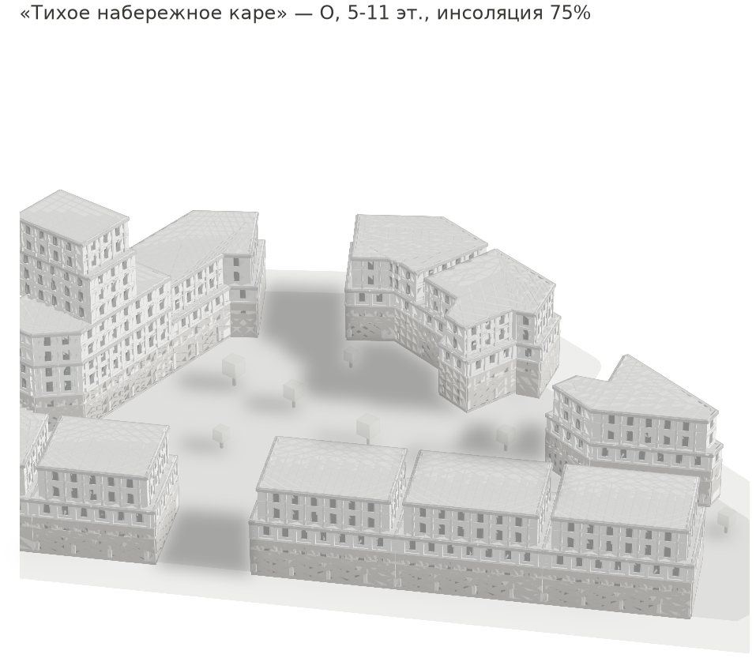
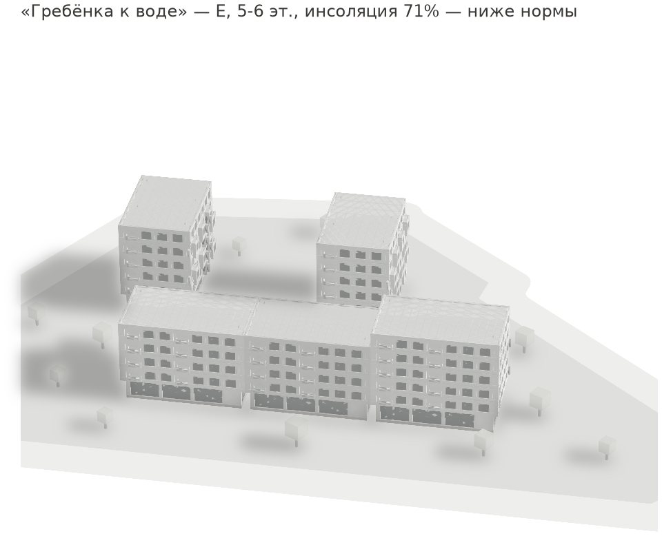
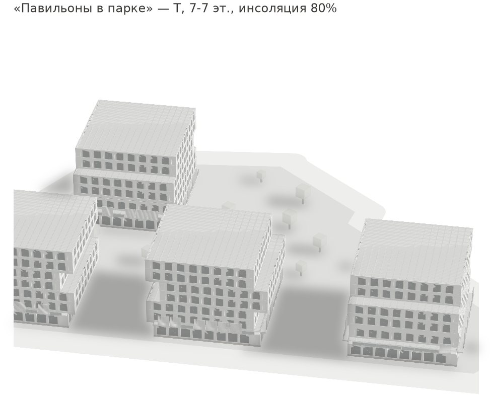
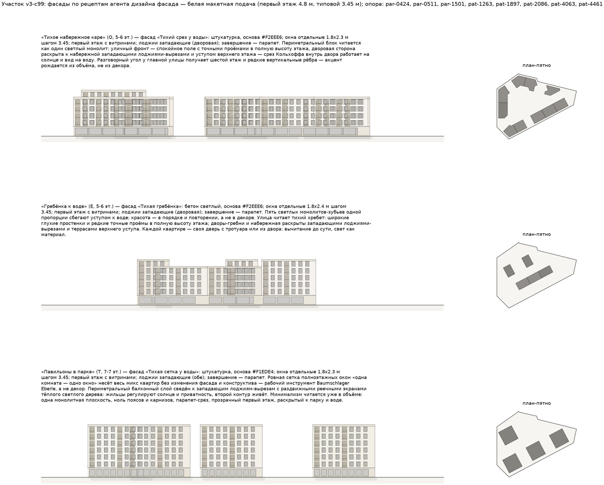
Полный буклет прогона:Full run booklet: PDF (Russian)
Квартиры «по плате»Apartments “by board”
Каждая секция проходит цепочку: каркас «ядро + пилоны» → коробки квартир по осям → планировки → судья → приёмка R01–R19. Несущий железобетон — тёмным, стены, перегородки, двери и окна — светлым.
Each section runs a chain: “core + piers” structure → apartment boxes on the grid → layouts → judge → acceptance R01–R19. Load-bearing concrete in dark grey; walls, partitions, doors and windows in light grey.
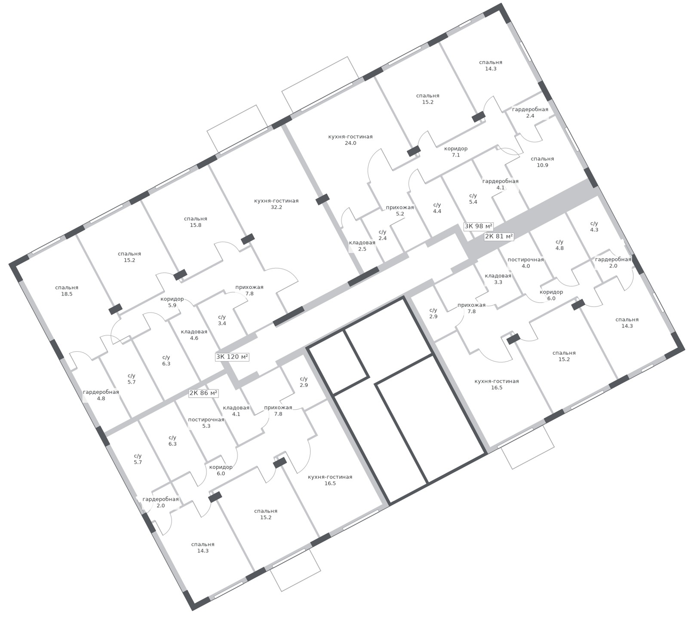
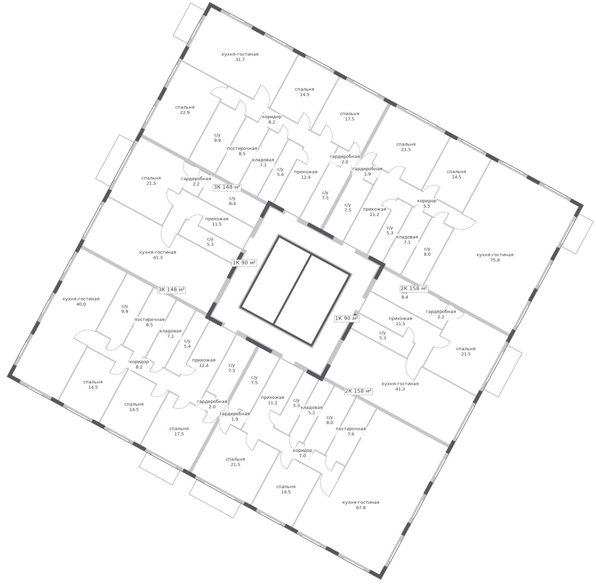
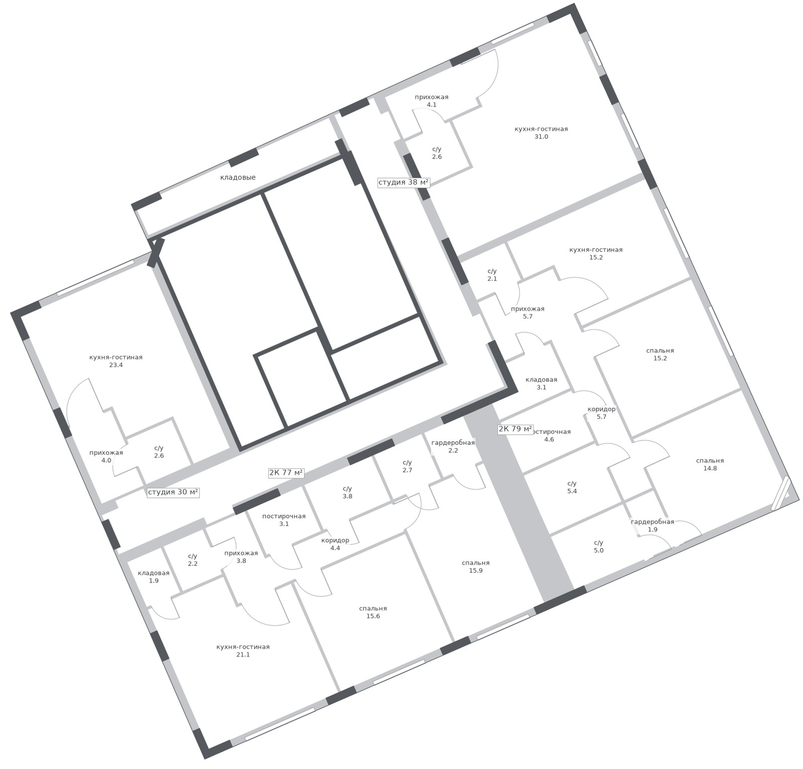
Деньги и ресурсыMoney and resources
Экономический гейт проверяет программу при целевой марже и, если нужно, ищет рычаги: цена, продажа машиномест, бюджетные программы, этажность. Банковский пакет добавляет стресс-тест и ковенанты, ресурсный модуль — рабочих, бетон, арматуру и инженерные нагрузки по очередям. Все цифры — в буклете прогона.
An economic gate tests the programme against a target margin and, if needed, finds levers: price, parking sales, public programmes, height. The bank pack adds a stress test and covenants; the resources module adds workforce, concrete, rebar and utility loads by phase. All figures are in the run booklet.
Пилотный прогон: Екатеринбург, 349 га у водохранилищаPilot run: Yekaterinburg, 349 ha by a reservoir
Первый публичный прогон. Задача заказчика — около 8 млн м² программы и работа в языке признанных мастеров; всё остальное система решала сама: фигура территории, три замысла, кварталы, высотность, экономика.
The first public run. The brief: about 8 million m² of programme in the language of recognised masters; everything else — site figure, three concepts, blocks, heights, economics — was decided by the system.
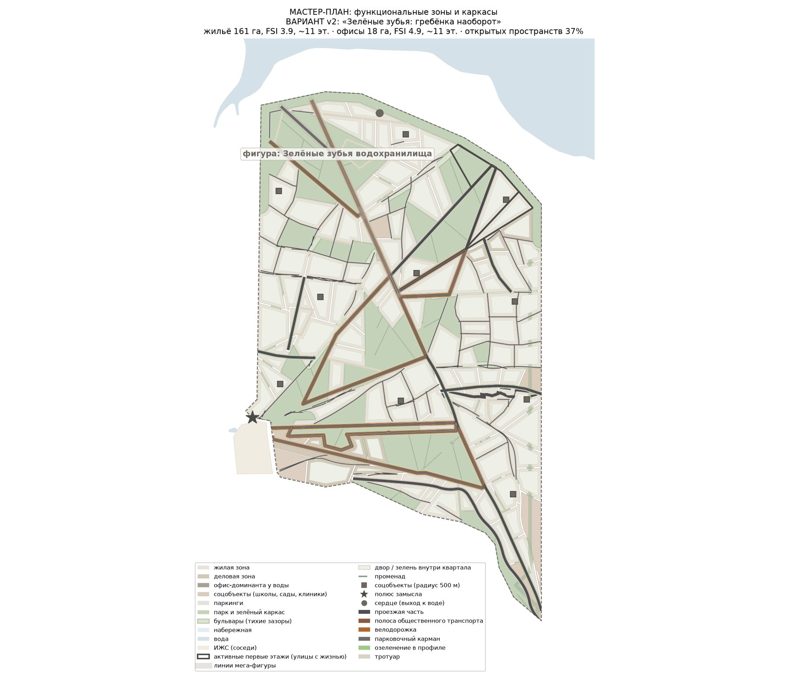
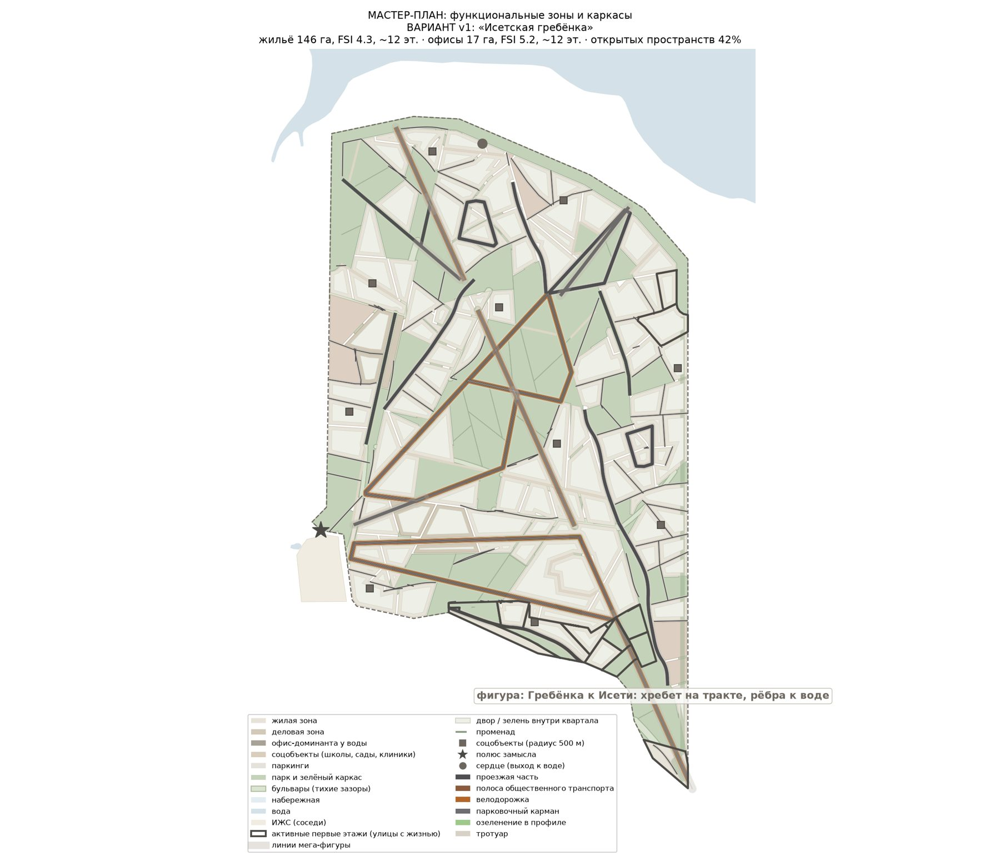
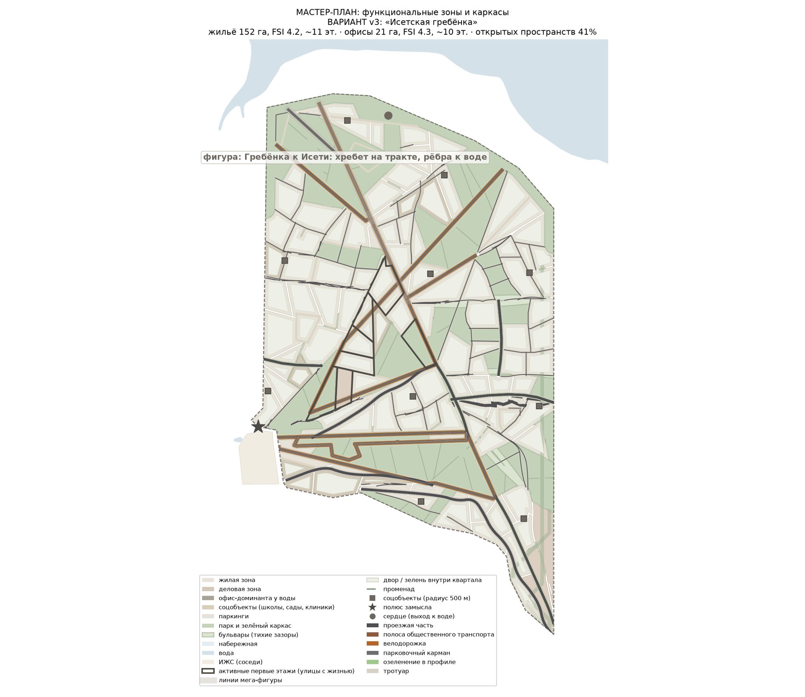
Три замысла отбирались честно: критик по тексту, жюри по карте. Выбран не самый красивый и не самый прибыльный (ROI 21% против 35%), а самый сбалансированный: больше всего земли под жильё, парки почти по норме, самая низкая этажность.
Concepts were judged twice: by a critic on the text and by a jury on the map. The winner was neither the prettiest nor the most profitable (ROI 21% vs 35%), but the most balanced: the most land for housing, parks almost at the norm, the lowest heights.
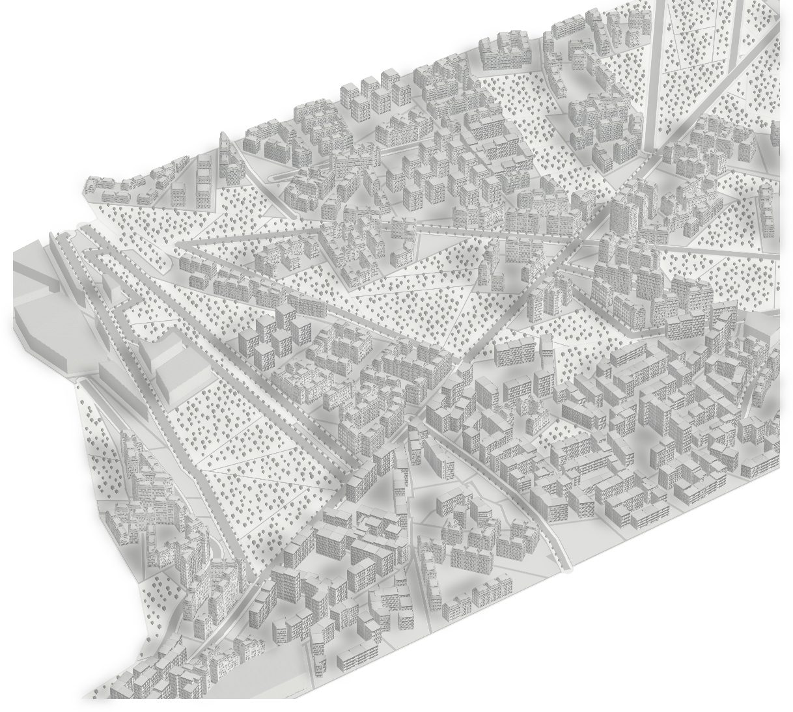
Экономический гейт: как программа стала прибыльнойEconomic gate: how the programme became profitable
Программа заказчика как есть давала минус 1,3% маржи. Гейт довёл её до цели за четыре хода и честно назвал условия: проект прибылен только если выполнены все четыре.
The client’s programme as given showed a −1.3% margin. The gate reached the target in four moves and stated the conditions plainly: the project is profitable only if all four hold.
- программа как есть — маржа −1,3%programme as given — margin −1.3%
- цена жилья +15% к прогнозу: позиционирование выше рынка (вода, среда, стили) — 10,3%housing price +15% over forecast: premium positioning (water, setting, styles) — 10.3%
- продажа 80% подземных машиномест — 13,9%selling 80% of underground parking — 13.9%
- половина школ и садов по бюджетным программам — 17,3%half of schools and kindergartens via public programmes — 17.3%
- этажность +30% на той же земле — 20,5%: прибыль 358 млрд ₽, 8,5 года, четыре очередиheights +30% on the same land — 20.5%: profit RUB 358 bn, 8.5 years, four phases
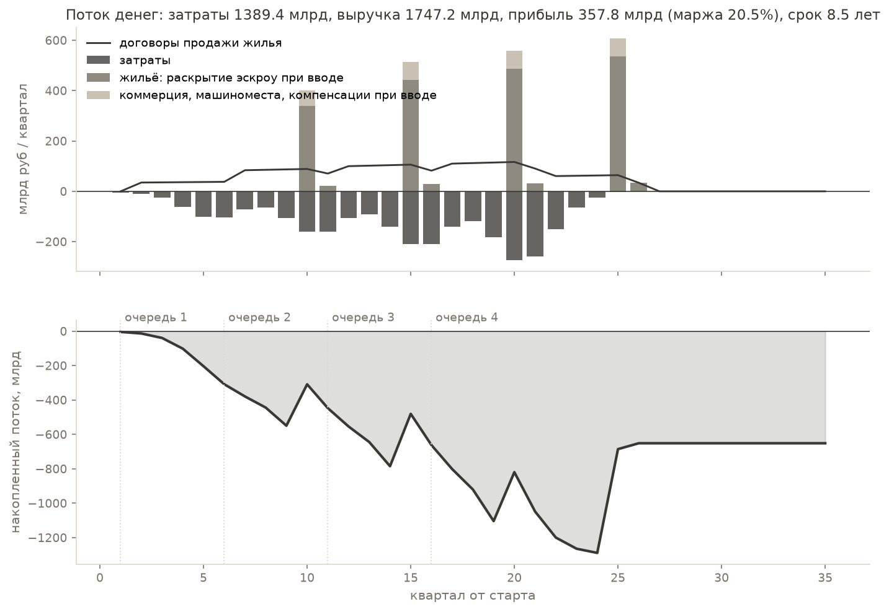
Буклет пилотного прогонаPilot run booklet: PDF (Russian)
Проверка рабочей документацииChecking working drawings
Вторая точка контура. Пилот в СберСити, октябрь 2026: один корпус жилого объекта, стадия РД, листы берутся прямо из среды общих данных (Pilot-BIM). ИИ-инспектор читает лист — и текст, и графику, — находит требования, которые к нему относятся, сверяет и выпускает отчёт по разделу. Независимый контролёр перепроверяет каждое нарушение; где они расходятся, вопрос уходит специалисту.
The second point of the loop. A pilot at SberCity, October 2026: one building of a residential project, working-drawing stage, sheets taken straight from the common data environment (Pilot-BIM). An AI inspector reads each sheet — text and graphics — finds the requirements that apply, checks them and issues a report per discipline. An independent controller re-checks every violation; where the two disagree, the question goes to a specialist.
Отчёт по каждому разделу: пункт стандарта, дословная цитата, факт на листе, фрагмент чертежа с рамкой и ссылка «открыть лист». Проверить вывод системы можно за минуту, не открывая том.
A report per discipline: the clause, its verbatim quote, the fact on the sheet, a framed drawing fragment and an “open sheet” link. A reviewer can verify the system’s conclusion in a minute without opening the volume.
Четыре примера из пилотаFour examples from the pilot
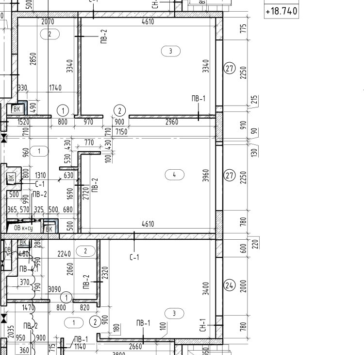
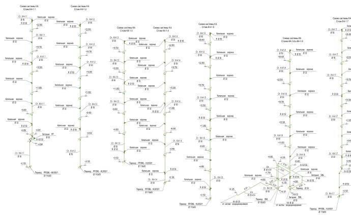
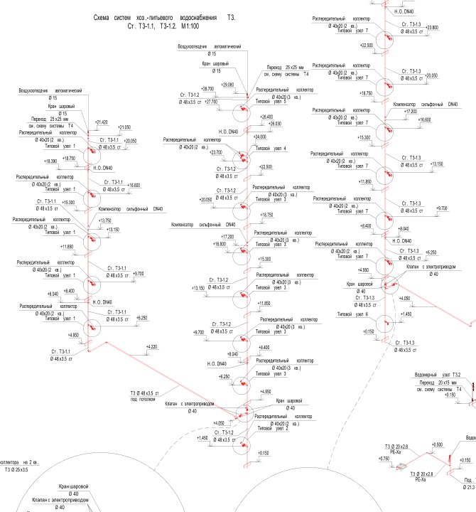
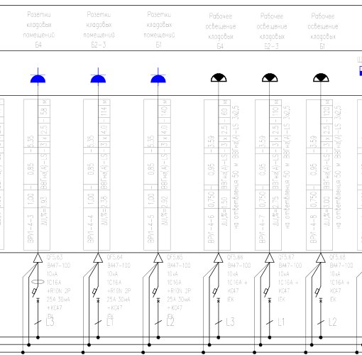
Как это выглядит в отчётеWhat it looks like in the report
Восемь записей из отчётов пилота в том виде, в каком их видит проверяющий: требование, факт на листе, вывод контролёра и фрагмент чертежа с рамкой. Шифры альбомов и пунктов стандартов убраны.
Eight entries from the pilot reports as a reviewer sees them: the requirement, the fact on the sheet, the controller’s verdict and the framed drawing fragment. Volume codes and clause numbers are removed.
- АРArchitectureНарушениеViolation
Ширина кухонь, гостиных, кухонь-столовых — не менее 3,6 мKitchen, living and kitchen-dining rooms at least 3.6 m wide
Требование организацииCompany requirementДля кухонь, гостиных, кухонь-столовых ширина комнаты принимается не менее 3,6 м.For kitchens, living rooms and kitchen-dining rooms the room width is taken as at least 3.6 m.
Факт на листеOn the sheetкухня-столовая кв. 3 — 3 400 мм; кв. 1 — 3 540 ммkitchen-dining, apt. 3 — 3,400 mm; apt. 1 — 3,540 mm
КонтролёрControllerПодтверждаю. На плане кухни-столовые кв. 3 и кв. 1 имеют ширину 3 400 и 3 540 мм, меньше требуемых 3 600. Кв. 4 (3 695) и кв. 5 (3 770) соответствуют.Confirmed. On the plan the kitchen-dining rooms of apts. 3 and 1 are 3,400 and 3,540 mm wide, below the required 3,600. Apts. 4 (3,695) and 5 (3,770) comply.
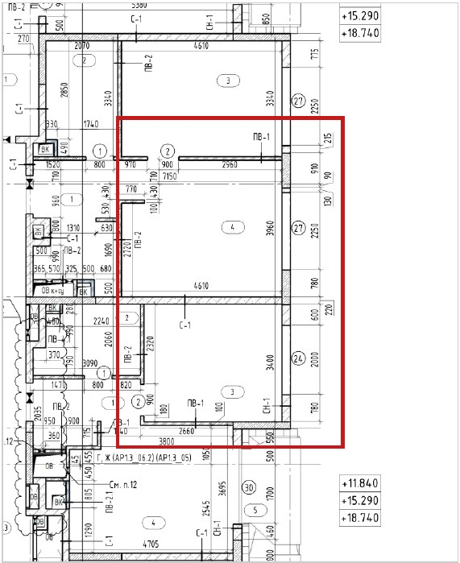
Фрагмент листа из отчёта; рамка — место проверкиSheet fragment from the report; the frame marks the checked spot - ВКPlumbingНарушениеViolation
Дренажная канализация — из полипропилена, с противопожарными манжетами в проходах через перекрытияDrainage pipework in polypropylene with fire collars at floor penetrations
Требование организацииCompany requirementСети дренажной канализации надземной части здания выполняются из полипропиленовых труб с установкой в местах прохода через межэтажные перекрытия противопожарных манжет.Above-ground drainage networks are made of polypropylene pipes with fire collars installed where they pass through floor slabs.
Факт на листеOn the sheetпротивопожарные манжеты не найденыfire collars not found
КонтролёрControllerПодтверждаю. На схемах стояков К4 указаны полипропиленовые трубы, но обозначений противопожарных манжет в местах прохода через перекрытия нет.Confirmed. The K4 riser schematics show polypropylene pipes, but no fire-collar symbols at floor penetrations.
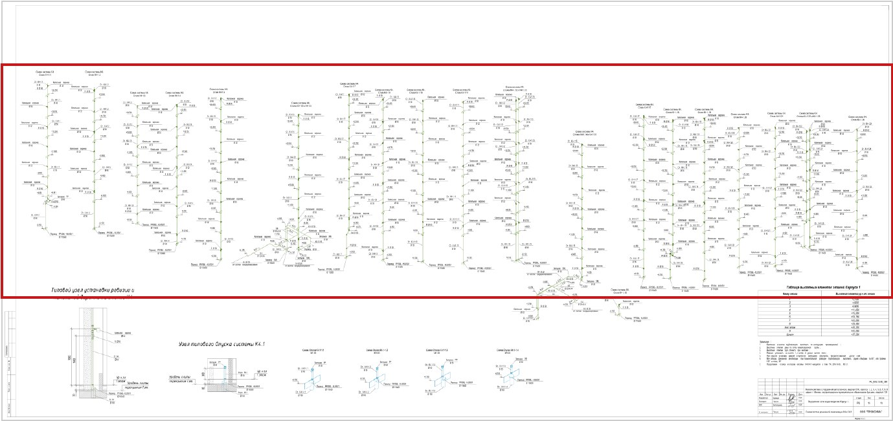
Фрагмент листа из отчёта; рамка — место проверкиSheet fragment from the report; the frame marks the checked spot - АРArchitectureНарушениеViolation
Минимальный размер жилой комнаты — 12 м²Minimum living-room area 12 m²
Требование организацииCompany requirementМинимальный размер жилых комнат: 12 м² для классов balanced / optimum, 14 м² для advanced / superb.Minimum living-room area: 12 m² for balanced / optimum, 14 m² for advanced / superb.
Факт на листеOn the sheetжилая комната 11,76 м²; жилая комната 11,73 м²living room 11.76 m²; living room 11.73 m²
КонтролёрControllerПодтверждаю. В квартире 2 две жилые комнаты площадью 11,76 и 11,73 м², меньше минимальных 12 м².Confirmed. Apartment 2 has two living rooms of 11.76 and 11.73 m², below the 12 m² minimum.
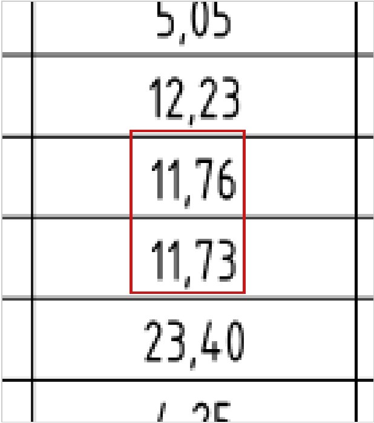
Фрагмент листа из отчёта; рамка — место проверкиSheet fragment from the report; the frame marks the checked spot - ОВHVACНарушениеViolation
Дренаж от фанкойлов МОП выполняется в полном объёме в разделе ОВиКFan-coil drainage in common areas is fully designed within the HVAC section
Требование организацииCompany requirementДренажный трубопровод от фанкойлов МОП выполняется в полном объёме в разделе ОВиК.Drainage pipework from fan-coils in common areas is designed in full within the HVAC section.
Факт на листеOn the sheetдренаж от фанкойлов — самотёком в дренажные стояки через капельную воронку, «см. проект ВК»fan-coil drainage by gravity into drainage risers via a drip funnel, “see plumbing design”
КонтролёрControllerПодтверждаю. В примечании 3 дренаж фанкойлов отнесён к разделу ВК, а не выполнен в разделе ОВиК.Confirmed. Note 3 assigns fan-coil drainage to the plumbing section instead of designing it within HVAC.
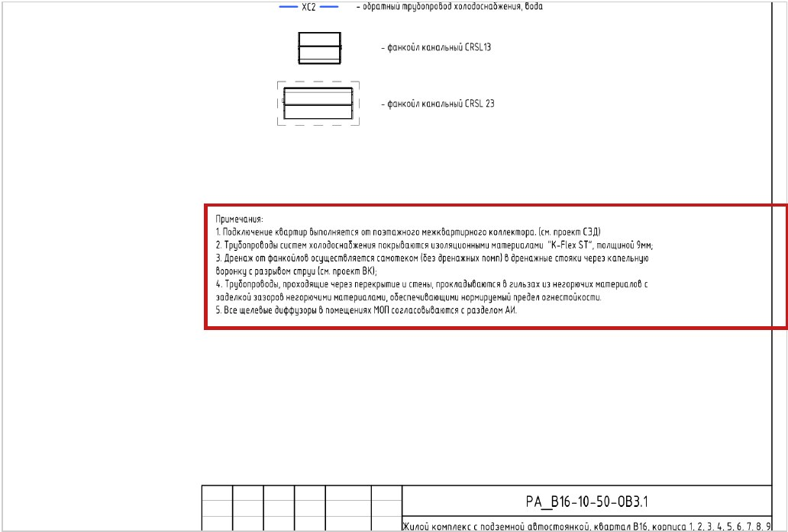
Фрагмент листа из отчёта; рамка — место проверкиSheet fragment from the report; the frame marks the checked spot - ВКPlumbingНарушениеViolation
Одна группа стояков ГВС (Т3+Т4) обслуживает не более 2 квартирOne group of hot-water risers (T3+T4) serves no more than 2 apartments
Требование организацииCompany requirementНе допускается использование одной группы стояков ГВС (Т3+Т4) более чем на 2 квартиры.One group of hot-water risers (T3+T4) must not serve more than 2 apartments.
Факт на листеOn the sheetпоэтажные коллекторы Ø40×20 на 2, 3 и 4 квартиры; один стояк Т3 обслуживает коллекторы на 3 и на 2 квартирыfloor manifolds Ø40×20 for 2, 3 and 4 apartments; one T3 riser serves manifolds for 3 and for 2 apartments
КонтролёрControllerПодтверждаю. На схеме системы Т3 показаны распределительные коллекторы на 2, 3 и 4 квартиры (типовые узлы 1, 2, 3) — группа стояков обслуживает больше двух квартир.Confirmed. The T3 schematic shows distribution manifolds for 2, 3 and 4 apartments (typical units 1, 2, 3) — a riser group serves more than two apartments.
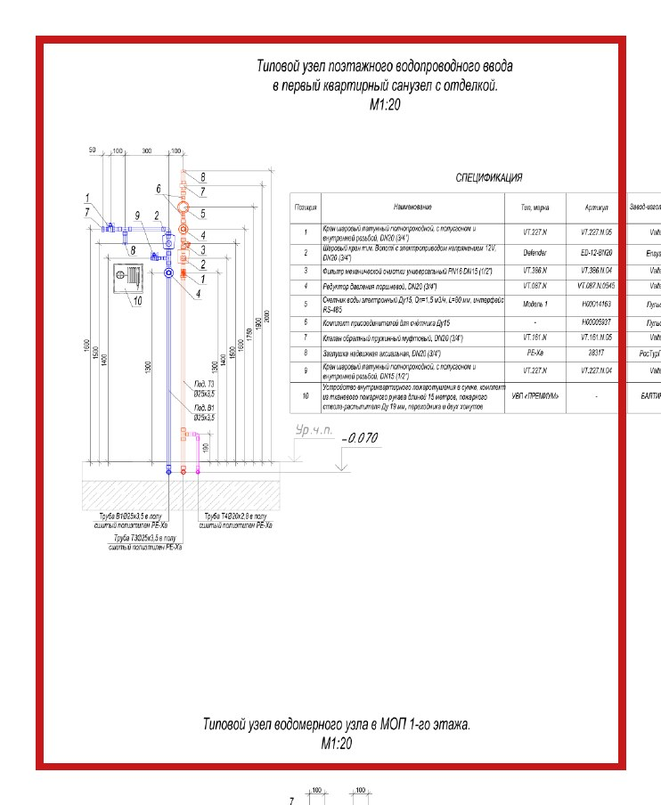
Фрагмент листа из отчёта; рамка — место проверкиSheet fragment from the report; the frame marks the checked spot - ОВHVACНарушениеViolation
Приточные установки — только согласованных производителейAir-handling units — approved manufacturers only
Требование организацииCompany requirementПриточно-вытяжные установки с рекуператором и приточные установки: РэдВен (видовые места), Сезон, Арктос (для технических помещений).Supply and heat-recovery air-handling units: RedVen (visible locations), Sezon, Arktos (for plant rooms).
Факт на листеOn the sheetWHEIL Polaris 50.NS и WHEIL Wega XP 40-20 (НПТ Климатика) на схемах систем П2к1 и Пж2к1WHEIL Polaris 50.NS and WHEIL Wega XP 40-20 (NPT Klimatika) on the P2k1 and Pzh2k1 system schematics
КонтролёрControllerПодтверждаю. На аксонометрических схемах указаны установки WHEIL, тогда как стандарт допускает только РэдВен, Сезон или Арктос.Confirmed. The isometric schematics specify WHEIL units, whereas the standard allows only RedVen, Sezon or Arktos.
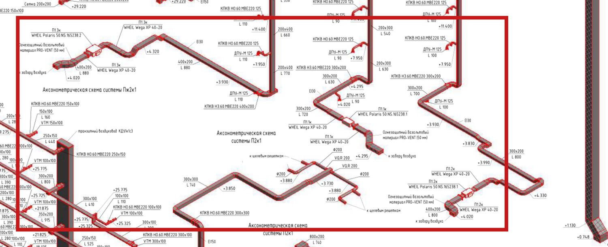
Фрагмент листа из отчёта; рамка — место проверкиSheet fragment from the report; the frame marks the checked spot - ОВHVACНарушениеViolation
Фанкойлы — преимущественно в санузлах и гардеробных, в коридорах — по согласованию с заказчикомFan-coils mainly in bathrooms and walk-in closets; in corridors only with the client’s approval
Требование организацииCompany requirementФанкойлы (канальные вентиляторные доводчики) размещаются преимущественно в санузлах и гардеробных; при особой необходимости, по согласованию с заказчиком, — в квартирных коридорах.Ducted fan-coils are placed mainly in bathrooms and walk-in closets; where really necessary, with the client’s approval, in apartment corridors.
Факт на листеOn the sheetфанкойлы CRSL в прихожих (5,5–13,4 м²) и в коридорах МОП (13–21 м²); отметки о согласовании с заказчиком на листе нетCRSL fan-coils in entrance halls (5.5–13.4 m²) and in common corridors (13–21 m²); no note of the client’s approval on the sheet
КонтролёрControllerПодтверждаю. На плане фанкойлы размещены в прихожих и коридорах, а не преимущественно в санузлах и гардеробных; согласование с заказчиком не показано.Confirmed. On the plan the fan-coils sit in entrance halls and corridors rather than mainly in bathrooms and closets; no client approval is shown.
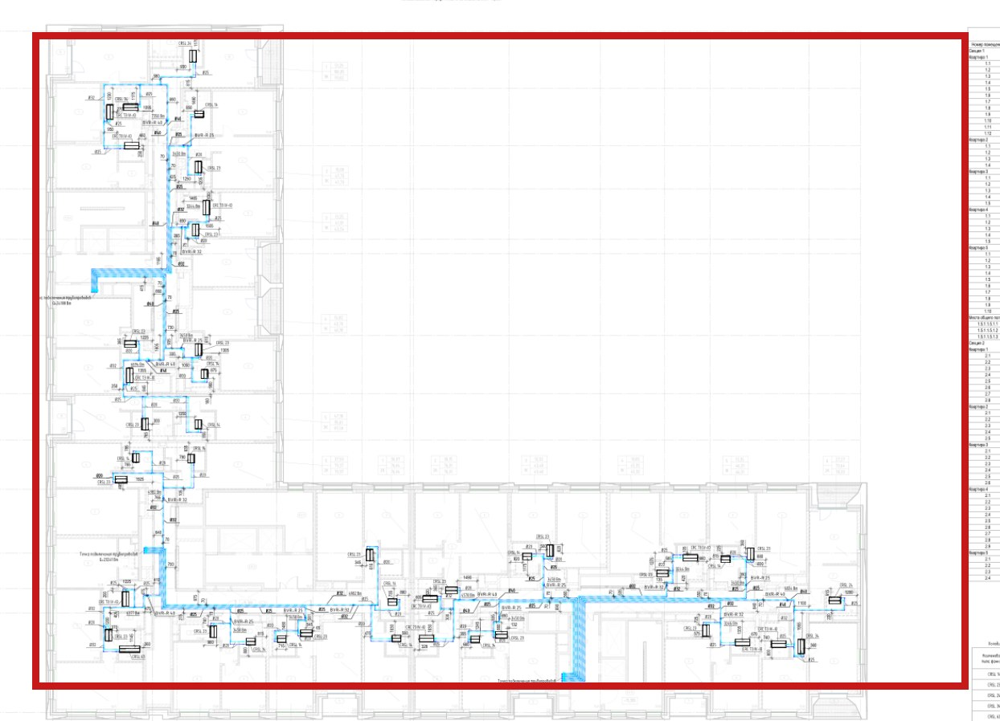
Фрагмент листа из отчёта; рамка — место проверкиSheet fragment from the report; the frame marks the checked spot - ВКPlumbingСпорный вопросDisputed
Горячее водоснабжение — с циркуляцией по стоякам и магистралямHot water with circulation through risers and mains
Требование организацииCompany requirementГорячее водоснабжение предусматривается с циркуляцией по стоякам и магистралям.Hot-water supply is designed with circulation through risers and mains.
Факт на листеOn the sheetинспектор: «соответствует» — переходы на Т4 и таблица компенсаторов; контролёр: фрагменты показывают систему Т3, а не Т4, циркуляция не доказанаinspector: “compliant” — transitions to T4 and the compensator table; controller: the fragments show system T3, not T4, circulation is not proven
КонтролёрControllerСпорный вопрос. Две роли прочитали лист по-разному; система не выбирает, кто прав, и отдаёт вопрос специалисту.Disputed. Two roles read the sheet differently; the system does not pick a side and hands the question to a specialist.
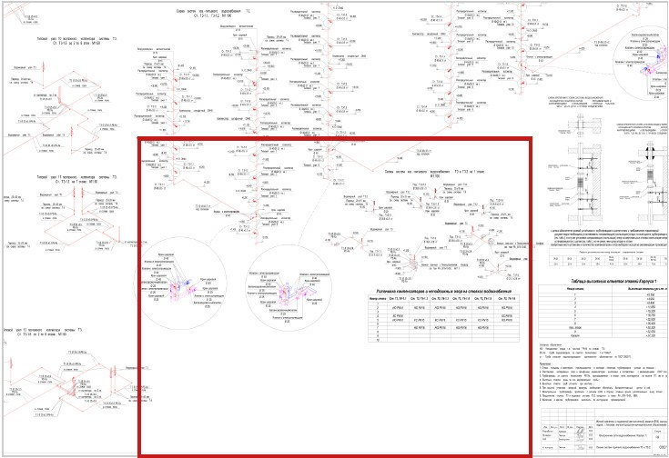
Фрагмент листа из отчёта; рамка — место проверкиSheet fragment from the report; the frame marks the checked spot
Что дальшеWhat comes next
- Сверка 2D и 3D: расхождения чертежей с информационной моделью — один из главных источников ошибок на стройке.2D vs 3D: discrepancies between drawings and the information model are a major source of site errors.
- Проверка ревизий: что изменилось между версиями и закрыты ли выданные замечания.Revision checks: what changed between versions and whether issued comments were closed.
- Спецификации против ведомостей объёмов и сметы.Specifications against bills of quantities and the estimate.
- Фоновый мониторинг среды общих данных: новый лист проверяется в момент загрузки, ответственный получает уведомление.Background monitoring of the common data environment: a new sheet is checked on upload and the owner is notified.
Исполнительная документацияAs-built documentation
Третья точка контура — StroyAct: проверка исполнительной документации против проекта. Акты освидетельствования скрытых работ и накопительные ведомости сверяются с рабочими чертежами и между собой: объёмы, даты, состав работ, ссылки на листы.
The third point of the loop is StroyAct: checking as-built records against the design. Hidden-work certificates and cumulative statements are verified against working drawings and against each other: quantities, dates, scope, sheet references.
Та же логика, что и в проверке чертежей: требование, факт в документе, улика и вывод. Разница в том, что здесь факт — это стройка, а не лист.
The same logic as in drawing checks: a requirement, the fact in the document, the evidence and a conclusion. The difference is that here the fact is the site, not the sheet.
Следующий шаг — сшить исполнительную с проверкой чертежей и моделью: тогда отклонение от проекта видно в момент подписания акта.
The next step is to stitch as-built records to drawing checks and the model: then a deviation from the design is visible the moment a certificate is signed.
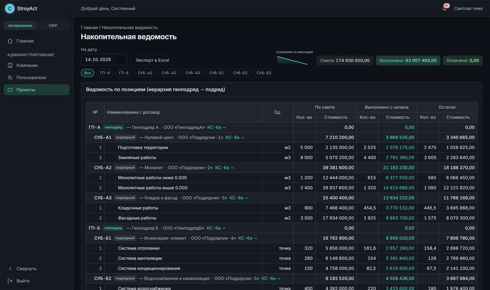
Для экспертизыFor expert review
Тот же механизм работает с требованиями экспертизы вместо корпоративных стандартов: комплект проверяется до подачи, а не после первого круга замечаний. Заказчик видит список расхождений с пунктами норм и фрагментами листов, пока документация ещё у проектировщика.
The same mechanism works with expert-review requirements instead of corporate standards: the set is checked before submission, not after the first round of comments. The client sees the list of discrepancies with code clauses and sheet fragments while the documentation is still with the designer.
- Меньше кругов экспертизы: типовые замечания закрываются до подачи.Fewer review rounds: typical comments are closed before submission.
- Каждое замечание — с пунктом нормы, цитатой и фрагментом листа, поэтому спор с проектировщиком короче.Every comment comes with the clause, its quote and a sheet fragment, so the argument with the designer is shorter.
- База требований экспертизы заводится один раз и работает на всех объектах компании.The review requirement base is built once and works across all the company’s projects.
Честные ограниченияHonest limits
- Региональные нормы пока не заведены: проверка идёт по федеральным СП и СанПиН, региональную специфику подтверждает проектировщик.Regional codes are not yet encoded: checks run on federal codes; a designer confirms regional specifics.
- Объёмное решение собирается не для всех кварталов: в свежем прогоне — 77 из 85; незакрытые система показывает, а не прячет.Massing is not solved for every block — 77 of 85 in the latest run; the gaps are shown, not hidden.
- Средняя инсоляция и отклонения от целевой этажности приводятся без подгонки под норму.Average daylight compliance and deviations from target heights are reported as is, not tuned to the norm.
- На глубоких плитах доля общих зон доходит до 24–30%; каре и подковы пока требуют доработки планировок.On deep floor plates common areas reach 24–30%; courtyard and horseshoe blocks still need layout work.
- Квартиры без расчёта инсоляции оцениваются по азимуту фасада; шум и вид на воду не учитываются.Apartments without a daylight calculation are scored by façade azimuth; noise and water views are not yet modelled.
- Числа без источника в рецептах формы и фасадов явно помечены как допущения.Any number in form and façade recipes without a source is explicitly flagged as an assumption.
- В проверке документации бывают ложные срабатывания: коридор 1 520 мм система назвала «не компактным», четыре квартиры на листе-фрагменте — «мало». Поэтому есть вторая роль и категория «спорное».Drawing checks produce false positives: a 1,520 mm corridor was called “not compact”, four apartments on a fragment sheet — “too few”. Hence the second role and the “disputed” category.
- Точность проверки на размеченном наборе ещё не измерена: доля найденных и пропущенных нарушений будет посчитана на томе с известными замечаниями.Checking accuracy on a labelled set is not yet measured: recall and precision will be computed on a volume with known comments.
Об автореAbout the author
Связаться:Contact: v.stepanov.aec@gmail.com · Telegram @Vadim_Stepanov_AEC · +7 903 250-76-09